Grandma Recipes
Pappa al Pomodoro
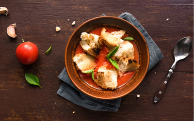Classic Tuscan bread soup made with bread, tomatoes, olive oil, garlic, and fresh basil.
Ingredients:
- Bread
- Tomatoes
- Olive oil
- Garlic
- Fresh basil
Instructions:
Bread is crumbled and cooked in a pot with tomatoes, olive oil, garlic, and fresh basil.
Polenta e Osei
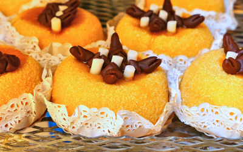A dish made from polenta, which is made from cornmeal and water. It's often shaped like small birds, hence the name 'bird polenta'.
Ingredients:
- Cornmeal
- Water
Instructions:
Cornmeal and water are mixed and cooked to make polenta. It's often shaped into small bird-like forms.
Pesto alla Genovese
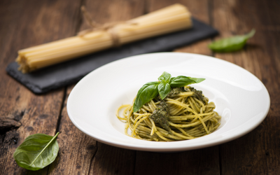Delicious pesto sauce made with fresh basil, pine nuts, parmesan cheese, garlic, and olive oil. Typically served with pasta.
Ingredients:
- Fresh basil
- Pine nuts
- Parmesan cheese
- Garlic
- Olive oil
Instructions:
Fresh basil, pine nuts, parmesan cheese, garlic, and olive oil are blended to make pesto sauce, which is then served with pasta.
Caponata
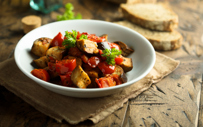Sweet and sour vegetable dish made with eggplant, celery, onion, tomatoes, olive oil, balsamic vinegar, and green olives.
Ingredients:
- Eggplant
- Celery
- Onion
- Tomatoes
- Olive oil
- Balsamic vinegar
- Green olives
Instructions:
Eggplant, celery, onion, and tomatoes are cooked with olive oil, balsamic vinegar, and green olives to make caponata.
Cicchetti Veneziani
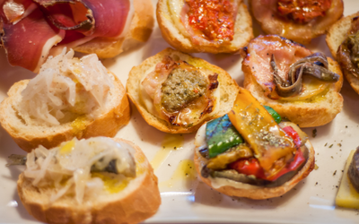Traditional Venetian style tapas. Typically includes a variety of seafood, cheese, and olives.
Ingredients:
- Seafood
- Cheese
- Olives
Instructions:
A variety of seafood, cheese, and olives are served as small snacks, similar to tapas.
Risotto al Nero di Seppia
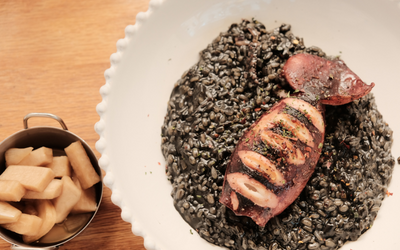Delicious risotto made with squid ink, giving it a black color. Popular in Venice and coastal regions.
Ingredients:
- Arborio rice
- Squid ink
- Seafood
- Tomatoes
- Garlic
- Onion
- Parmesan cheese
Instructions:
Arborio rice is cooked with squid ink, seafood, tomatoes, garlic, onion, and parmesan cheese to make risotto al nero di seppia.
Caciocavallo Podolico
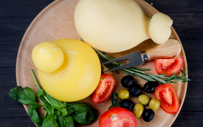The most delicious version of Italian caciocavallo cheese made from Podolico cow's milk. Found in Southern Italy.
Ingredients:
- Caciocavallo cheese
Instructions:
Podolico cow's milk is used to make caciocavallo cheese, which is then aged to perfection.
Cacciucco
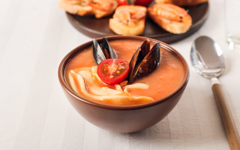Traditional Tuscan seafood soup. Made with fish, shrimp, squid, and mussels, flavored with plenty of garlic, tomatoes, and red pepper.
Ingredients:
- Fish
- Shrimp
- Squid
- Mussels
- Garlic
- Tomatoes
- Red pepper
Instructions:
Fish, shrimp, squid, and mussels are cooked with garlic, tomatoes, and red pepper to make cacciucco.
Focaccia Genovese
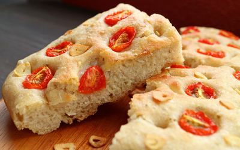Genoa's famous bread made with thin dough topped with olive oil, salt, and fresh herbs.
Ingredients:
- Flour
- Water
- Yeast
- Olive oil
- Salt
- Fresh herbs
Instructions:
Flour, water, and yeast are used to make thin dough, which is then topped with olive oil, salt, and fresh herbs to make focaccia genovese.
Arancini di Riso
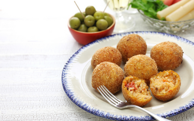Sicilian popular snacks made of fried rice balls. It may contain meat, cheese, or vegetables.
Ingredients:
- Rice
- Meat
- Cheese
- Vegetables
- Breadcrumbs
- Egg
Instructions:
Rice is cooked and formed into balls with meat, cheese, or vegetables. Then coated with breadcrumbs, dipped in beaten egg, and fried.
Ragu alla Bolognese
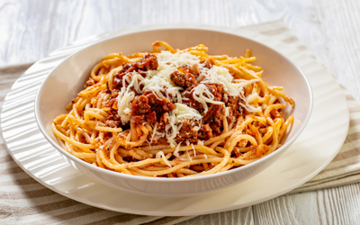Spicy pasta sauce made with minced meat cooked in a rich tomato sauce. An Italian classic.
Ingredients:
- Minced meat
- Tomatoes
- Onions
- Garlic
- Olive oil
- Herbs
Instructions:
Minced meat is cooked with tomatoes, onions, garlic, olive oil, and herbs to make ragu alla bolognese.
Polpette al Sugo
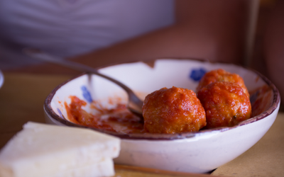Italian meatballs cooked in tomato sauce and served with parmesan cheese.
Ingredients:
- Ground meat
- Breadcrumbs
- Parmesan cheese
- Egg
- Tomato sauce
Instructions:
Ground meat is mixed with breadcrumbs, parmesan cheese, and egg. Formed into balls, cooked in tomato sauce, and served with parmesan cheese.
Minestrone Soup
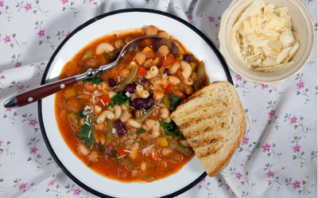Traditional Italian soup made with vegetables, beans, and sometimes pasta. Typically made with tomato sauce and vegetables.
Ingredients:
- Vegetables
- Beans
- Pasta
- Tomato sauce
- Herbs
Instructions:
Vegetables, beans, and pasta are cooked in tomato sauce with herbs to make minestrone soup.
Parmigiana di Melanzane
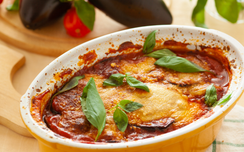Layered dish made with eggplant, tomato sauce, and mozzarella cheese.
Ingredients:
- Eggplant
- Tomato sauce
- Mozzarella cheese
- Parmesan cheese
- Breadcrumbs
Instructions:
Eggplant is layered with tomato sauce, mozzarella cheese, and parmesan cheese. Baked until golden brown and bubbly.
Pasta e Fagioli
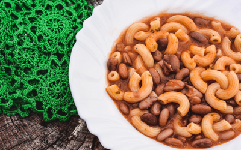A soup that perfectly combines pasta and beans. Typically made with tomato sauce and vegetables.
Ingredients:
- Pasta
- Beans
- Tomato sauce
- Vegetables
- Herbs
Instructions:
Pasta and beans are cooked in tomato sauce with vegetables and herbs to make pasta e fagioli soup.
Frittata
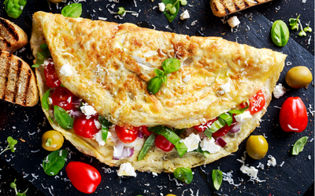Italian omelette made with eggs and various vegetables or cheeses. A breakfast dish.
Ingredients:
- Eggs
- Vegetables
- Cheese
- Herbs
Instructions:
Eggs are mixed with vegetables or cheeses, cooked until set, and served as frittata.
Torta di Mele
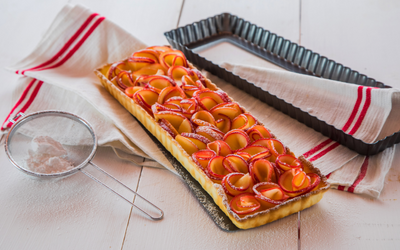Apple pie made with thinly sliced apples and flavored with cinnamon.
Ingredients:
- Apples
- Flour
- Sugar
- Butter
- Cinnamon
Instructions:
Thinly sliced apples are arranged in a pie crust, flavored with cinnamon, and baked until golden brown.
Pizzoccheri della Valtellina
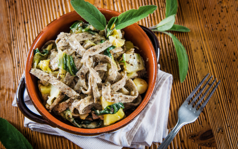Thin, coarse buckwheat flour pasta, served with potatoes, cabbage, cheese, and butter.
Ingredients:
- Buckwheat flour
- Potatoes
- Cabbage
- Cheese
- Butter
Instructions:
Buckwheat flour pasta is cooked and served with potatoes, cabbage, cheese, and butter.
Crostata di Ricotta e Marmellata
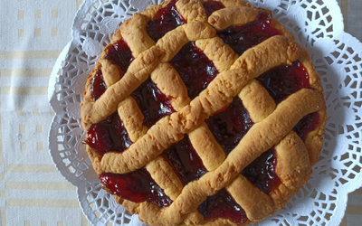A tart filled with ricotta cheese and jam. Served as a sweet snack or light dessert.
Ingredients:
- Ricotta cheese
- Jam
- Flour
- Sugar
- Butter
- Egg
Instructions:
Ricotta cheese and jam are filled in a tart crust made with flour, sugar, butter, and egg. Baked until golden brown.
Ossobuco alla Milanese

Milanese style braised veal shanks, cooked with wine, tomatoes, and aromatics.
Ingredients:
- Veal shanks
- Wine
- Tomatoes
- Aromatics
Instructions:
Veal shanks are braised with wine, tomatoes, and aromatics to make ossobuco alla milanese.
Ossobuco alla Milanese
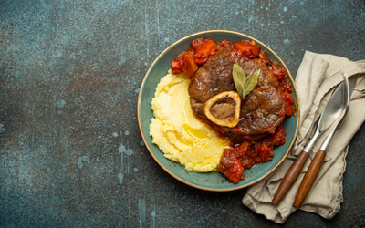Milanese style braised veal shanks, cooked with wine, tomatoes, and aromatics.
Ingredients:
- Veal shanks
- Wine
- Tomatoes
- Aromatics
Instructions:
Veal shanks are braised with wine, tomatoes, and aromatics to make ossobuco alla milanese.
Zuppa Inglese
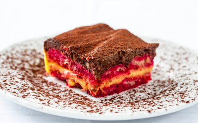Italian trifle made with sponge cake, custard, and fruit sauce.
Ingredients:
- Sponge cake
- Custard
- Fruit sauce
Instructions:
Layers of sponge cake, custard, and fruit sauce are assembled to make zuppa inglese.
Carciofi alla Romana
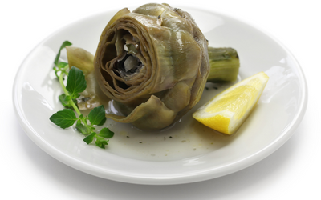Roman style artichokes cooked with fresh herbs and olive oil.
Ingredients:
- Artichokes
- Fresh herbs
- Olive oil
Instructions:
Artichokes are cooked with fresh herbs and olive oil to make carciofi alla romana.
Tortellini in Brodo

Small filled fresh pasta served in chicken broth.
Ingredients:
- Tortellini pasta
- Chicken broth
Instructions:
Small filled fresh pasta is cooked and served in chicken broth to make tortellini in brodo.
Panettone
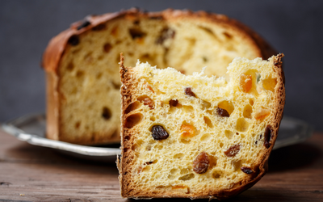Traditional Italian Christmas sweet bread enriched with dried fruits and nuts.
Ingredients:
- Flour
- Yeast
- Eggs
- Butter
- Dried fruits
- Nuts
Instructions:
Flour, yeast, eggs, and butter are mixed and enriched with dried fruits and nuts to make panettone.
Biscotti di Prato
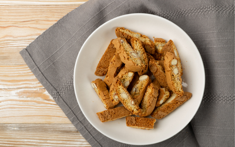Italian almond cookies that pair perfectly with tea or coffee.
Ingredients:
- Almond paste
- Sugar
- Egg whites
Instructions:
Almond paste, sugar, and egg whites are mixed and baked to make biscotti di prato.